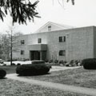

|  |
Marian Hall
Built in 1865
Dormitory for Freshman and Sophomore residents. |
The present Marian building was built as a gymnasium in 1948. It was the first large building to be constructed by the Marist Brothers on what is now the current Marist College campus. Marian was used primarily as a gym with other facilities constructed in the wings. Some of these facilities included a carpenter shop, a printing shop, a laundry room, garages, and storage space. In 1983 Marian Hall was transformed into a dormitory. The wings were renovated in order to make a second floor. The current Marian Hall stands next to the historic Greystone building and currently houses around 100 first and second year students.